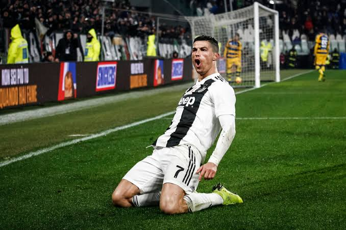

Introdução e Contexto Histórico
Cristiano Ronaldo dos Santos Aveiro, nascido em Funchal, Madeira, em 5 de fevereiro de 1985, é amplamente reconhecido por analistas esportivos como um dos atletas mais completos e dominantes da história do esporte global. Vindo de uma infância humilde, sua trajetória confunde-se com a evolução da própria preparação física e tática no futebol do século XXI.
Este projeto visa documentar como a fusão entre valências físicas privilegiadas, refinamento técnico rigoroso e uma mentalidade competitiva sem precedentes transformou um jovem ponta veloz de Portugal no maior artilheiro em jogos oficiais que o mundo já testemunhou.
A Evolução nos Clubes Profissionais

A jornada profissional de Ronaldo iniciou-se nas categorias de base do Sporting CP. Contudo, seu verdadeiro impacto global começou em 2003, ao ser contratado pelo Manchester United sob a mentoria de Sir Alex Ferguson. Na Inglaterra, herdou a mítica camisa 7 e evoluiu de um jogador focado em dribles para um finalizador letal, conquistando sua primeira UEFA Champions League e sua primeira Bola de Ouro em 2008.
Em 2009, o Real Madrid o contratou por uma cifra recorde na época. No clube espanhol, Ronaldo atingiu o ápice de sua dinastia esportiva. Foram 450 gols em 438 partidas oficiais — uma média assustadora superior a um gol por jogo. Liderou a equipe na conquista de quatro títulos da Champions League, sendo três deles de forma consecutiva.
Posteriormente, buscou novos desafios na Juventus, onde conquistou o bicampeonato italiano, teve um breve e marcante retorno ao Manchester United e, atualmente, lidera o projeto de expansion do futebol asiático no Al-Nassr, mantendo médias de gols impressionantes mesmo após duas décadas de carreira em alto nível.
| Clube / Instituição | Período Principal |
|---|